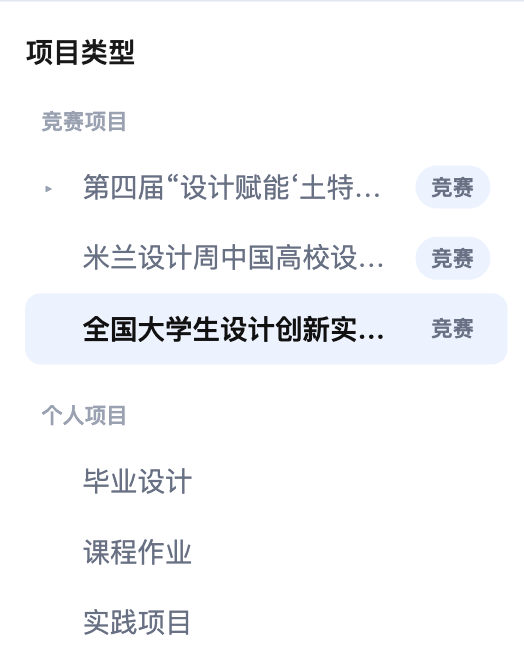
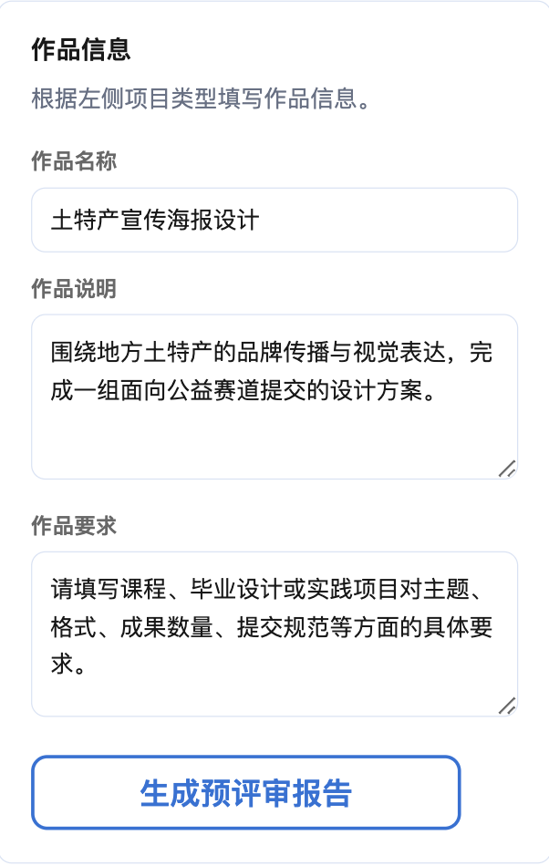
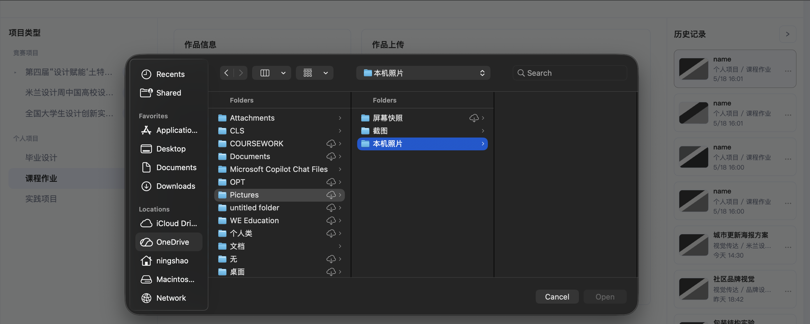
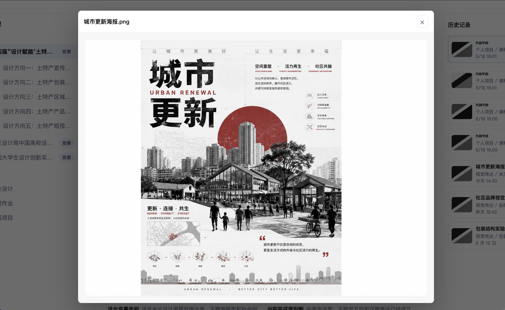
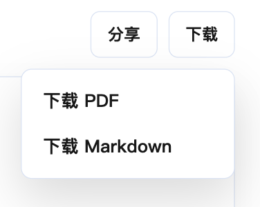
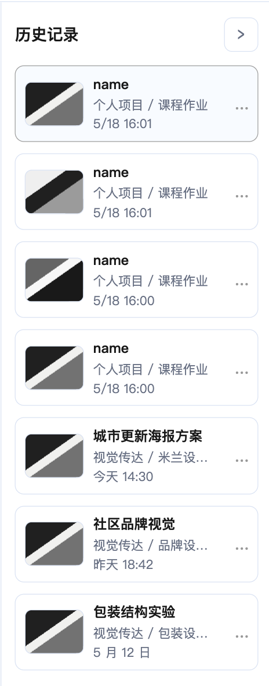
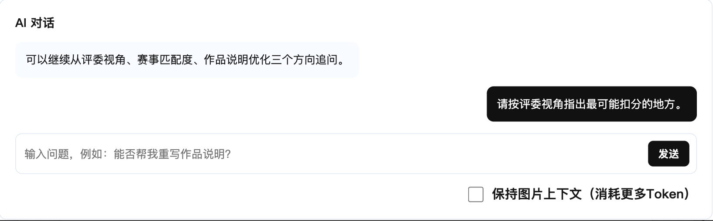
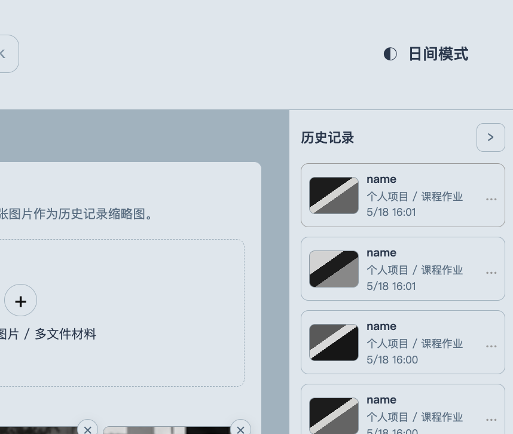

功能模块
本页按当前页面说明已实现功能、部分实现功能与规划中功能，暂不展开技术实现细节。
分类导航
左侧分类导航用于决定本次预评审的项目语境。点击节点后，页面会根据所选项目类型更新表单展示。
- 竞赛项目与个人项目均可选。
- 公益赛道支持展开和折叠。
- 当前选中节点会高亮。
- 个人项目会让表单额外显示“作品要求”。

作品信息表单
作品信息表单用于收集生成报告所需文本。竞赛项目展示作品名称和作品说明；个人项目额外展示作品要求。

作品上传与预览
上传模块用于模拟作品主图、多文件材料和过程材料。
- 支持点击选择文件和拖拽上传。
- 非图片显示扩展名占位。
- 支持删除和拖拽排序。


报告操作
报告操作位于正式预评审报告上方，包含分享、Markdown 下载和打印入口。
- 分享：提供当前报告的分享入口。
- Markdown 下载：导出当前报告文本。
- PDF 下载：当前通过浏览器打印流程保存。

历史记录
右侧历史栏初始显示 3 条静态记录。新生成报告会创建新历史记录，最多保留 12 条。
当前“查看”只切换高亮，不会恢复旧报告正文。完整历史回访属于规划中能力。

AI 对话与主题切换
AI 对话当前仅提供模拟回复。“保持图片上下文”复选框只展示 UI，没有参与真实对话逻辑。主题切换用于查看日间和夜间界面状态。

